Tonkatsu Ramen

Ingredients
Tonkotsu Broth
- 1 kg of pork femurs
- 1 kg of pork trotters
Noodles & Toppings
- Alkaline noodles
- Cha-shu
- 6 minute Jammy Egg
- Menma
- Scallions, chopped finely
Tare
- 1/4 cup dried anchovies
- 1 kombu
- 1/2 cup soy sauce
- 1/2 cup sake
- 1 tbsp salt
Directions
Tonkotsu Broth
- Clean the bones. Make sure there is no dirt on the trotters. Oftentimes, there is dirt dislodged between the trotters. So make sure to spread those toes apart to get that gunk out.
- Let the bones sit in cold water for 6 hours. This helps with getting the broth cleaner.
- Fill up your pot with the bones until the water barely submerges above the bones.
- Bring to a boil over high heat
- Once the scum rises to the top, strain the bones.
- Scrub away the scum and coagulated blood on the bones with a brush.
- Scrub the pot clean
- Add fresh water until the bones are fully submerged
- Bring to a boil, then put on medium heat for 12 hours.
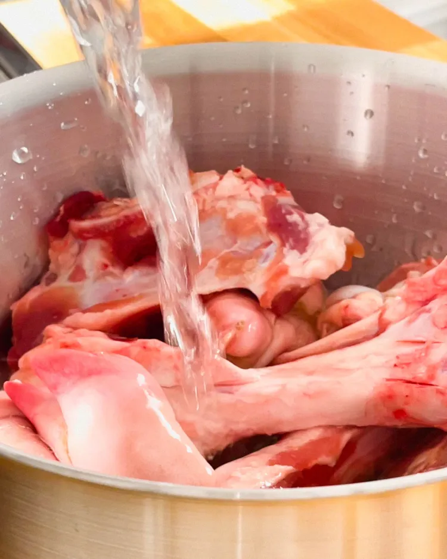
- During this time, if the water level gets too low, add more water.
- Once the broth is finished, everything should be almost completely disintegrated.
- Strain the broth and reserve the broth in an airtight container.
- Cool overnight.
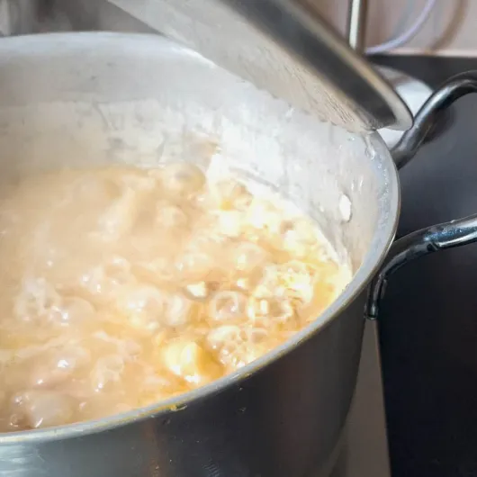
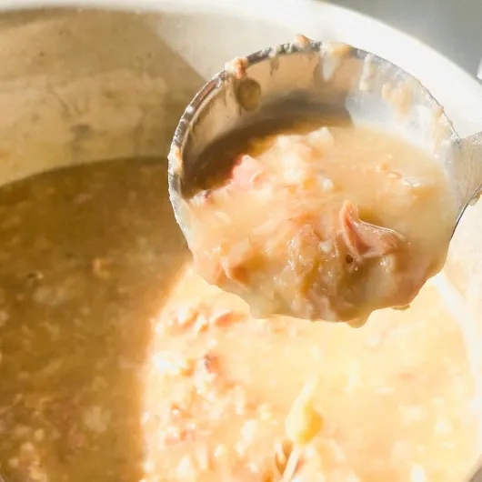
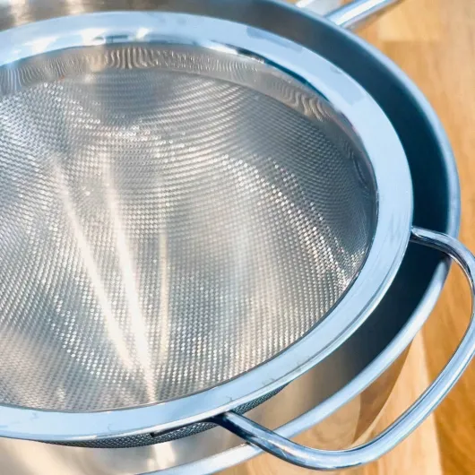
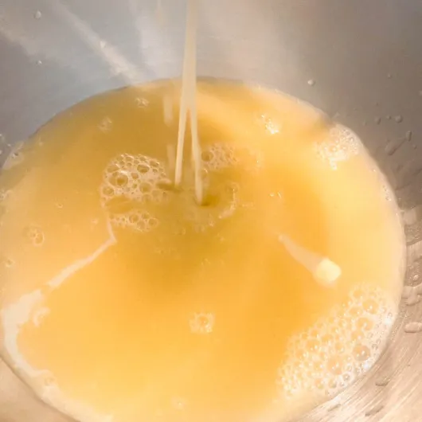
Cha-shu
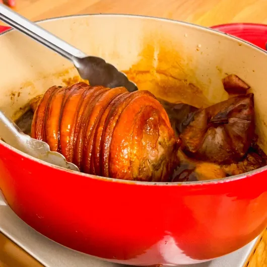
Tare
- Toast the anchovies on low heat.
- Once the anchovies have toasted, add all the ingredients EXCEPT for bonito flakes
- Once the kombu has softened (5 minutes), turn the heat off and steep the bonito flakes.
- Strain and mix with leftover cha-shu sauce.
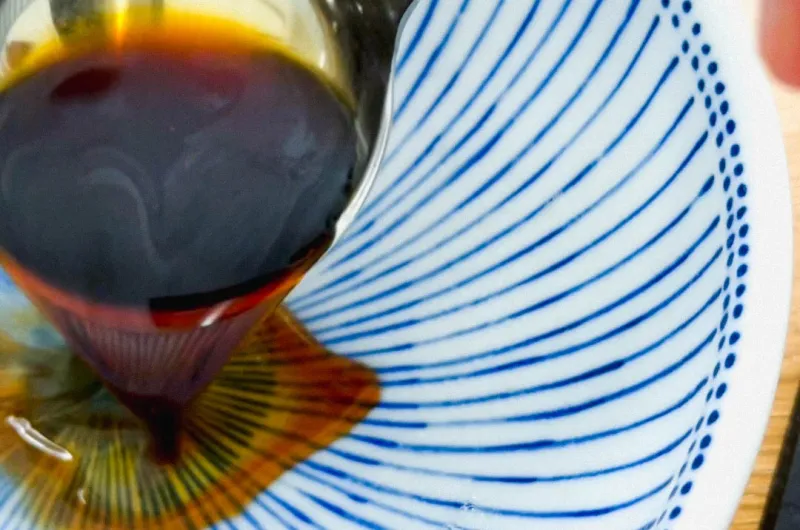
Assembly
- Heat your pork broth. Yes, it should coagulate like pork jello. This is a sign that all that good marrow, fat, gelatin, and collagen successfully emulsified into the broth. Do not be freaked out. Pat yourself on the back.
- Spoon 2 tbsp of tare mixture into your bowl.
- Warm your bowl with hot water. Discard water.
- Once the broth is boiling and piping hot, gently pour it in the bowl to mix with the tare.
- Gently place the noodles on a bed of hot broth. Scoop the noodles with your chopstick and lay it over unto itself away from you. This helps the noodles stay separated and not clumped.
- Garnish with 6 minute egg, charred chashu, menma (bamboo shoots- optional), and finely diced scallions.
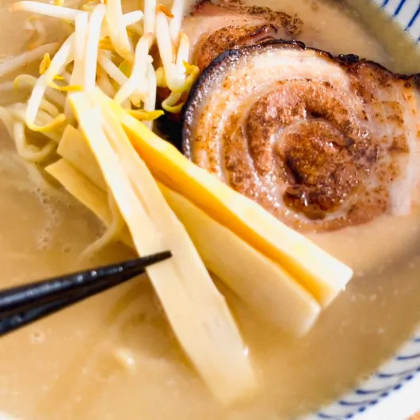
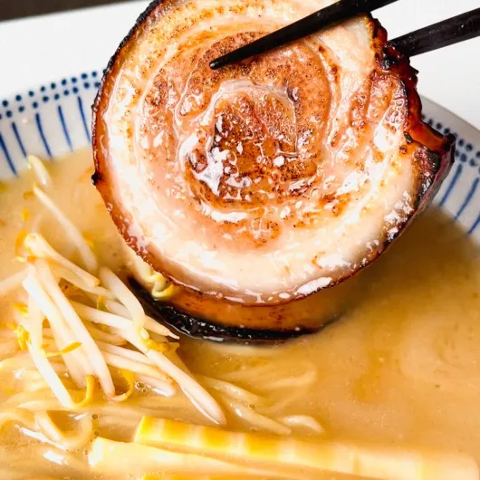
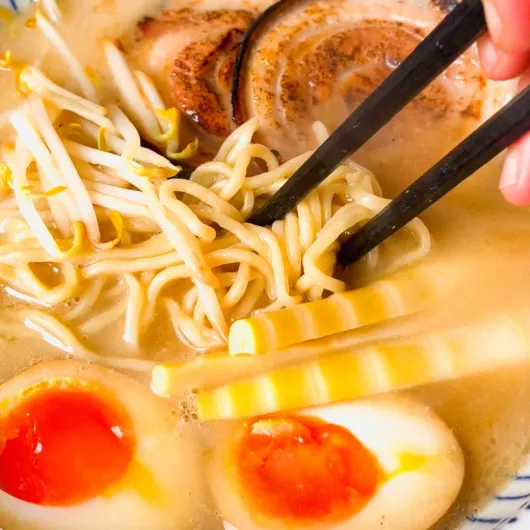
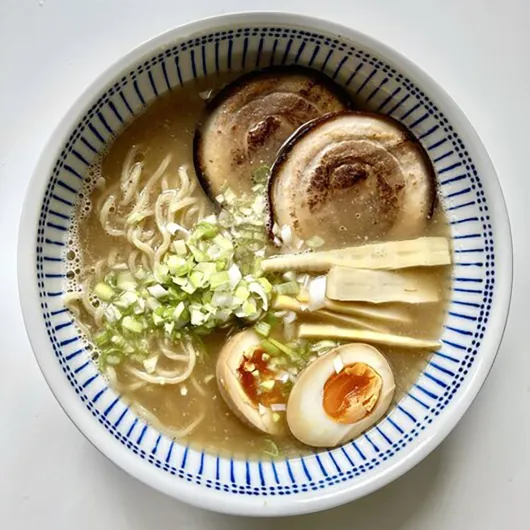
Home